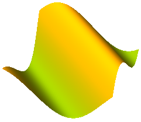

SurfaceVisualizing a moveable, parameterized surface; the surface characteristic is provided by a function |
Information
This information is part of the Modelica Standard Library maintained by the Modelica Association.
Model Surface defines a moveable, parametrized surface in 3-dim. space that is used for animation. This object is specified by:
- The surface frame (orientation object "R" and origin "r_0") in which the data is specified.
- A set of two parameters, one in u- and one in v-direction, that defines the control points.
- A time-varying position of each control point with respect to the surface frame.
The parameter values (u,v) are given by the ordinal numbers of the corresponding control point in u- or in v-direction, respectively. The surface is then defined by the replaceable function "surfaceCharacteristic" with the interface partialSurfaceCharacteristic that returns the x-, y-, z- coordinate of every control point in form of 3 arrays X, Y, Z, and an optional color array C, if every control point shall have a different color:
Real X[nu,nv], Y[nu,nv], Z[nu,nv], C[nu,nv,3];
An example of a parameterized surface with color coding is shown in the next figure:

Models Torus,
VoluminousWheel,
PipeWithScalarField,
demonstrate how new visualizer objects can be constructed with the Surface model.
The direct usage of the Surface model, as well as of the Torus and the VoluminousWheel models, are demonstrated with example
Examples.Elementary.Surfaces.
Parameters (4)
| nu |
Value: 2 Type: Integer Description: Number of points in u-Dimension |
|---|---|
| nv |
Value: 2 Type: Integer Description: Number of points in v-Dimension |
| wireframe |
Value: false Type: Boolean Description: = true: 3D model will be displayed without faces |
| multiColoredSurface |
Value: false Type: Boolean Description: = true: Color is defined for each surface point |
Inputs (5)
| R |
Default Value: Frames.nullRotation() Type: Orientation Description: Orientation object to rotate the world frame into the surface frame |
|---|---|
| r_0 |
Default Value: {0, 0, 0} Type: Position[3] (m) Description: Position vector from origin of world frame to origin of surface frame, resolved in world frame |
| color |
Default Value: {255, 0, 0} Type: Real[3] Description: Color of surface |
| specularCoefficient |
Default Value: 0.7 Type: SpecularCoefficient Description: Reflection of ambient light (= 0: light is completely absorbed) |
| transparency |
Default Value: 0 Type: Real Description: Transparency of shape: 0 (= opaque) ... 1 (= fully transparent) |
Components (1)
| R |
Type: Orientation Description: Orientation object to rotate the world frame into the surface frame |
|---|
Used in Examples (1)
|
Modelica.Mechanics.MultiBody.Examples.Elementary Demonstrate the visualization of a sine surface, as well as a torus and a wheel constructed from a surface |
Used in Components (4)
|
Modelica.Mechanics.MultiBody.Visualizers Visualizing a torus |
|
|
Modelica.Mechanics.MultiBody.Visualizers Visualizing a voluminous wheel |
|
|
Modelica.Mechanics.MultiBody.Visualizers Visualizing a planar rectangular surface |
|
|
Modelica.Mechanics.MultiBody.Visualizers.Advanced Visualizing a pipe with a scalar field |